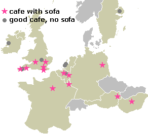
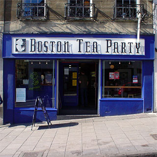
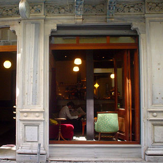

HH cafe reviews & photos

The Boston Tea Party, Park Street, Bristol, England

Ard Bia, Quay Street, Galway, Ireland

Şimdi, Asmalımescit Caddesi No. 9, Beyoglu, Istanbul, Turkey
see also: European phrase book
What is better than watching people on television in Eastenders, or listening to the repartee of the characters in Friends as they sit in Central Perk café? Well, since you need telling, the answer is to spend time in a real café, watching and talking to real people. Spend your money on coffee instead of on a television license or cable subscription!
The S-list - cafes with sofas
Luckily, not all of that time spent in front of the television was for nothing: Friends teaches us that every café needs a sofa WHY? . This page exists to tell you where you can find suitably equipped cafes.
The city with the highest cafe factor is Cambridge, England, which is unusual because it's really quite a small place: the following public sofas are within walking distance of each other.
- Picturehouse cafe, St Andrews Street, Cambridge, England MAP
Big and open, with lots of comfy sofas; usually has mellow music.
- CB2, Norfolk Street, Cambridge, England MAP
Something for everyone: books, Internet access, various furniture and a cosmopolitan crowd.
- 7a Jesus Lane, Cambridge, England MAP
Classy with live jazz, but not at all expensive; two excellent sofas.
- Starbucks, Market Square, Cambridge, England
Yet another horrid 'outlet', but with satisfyingly big sofas downstairs.
Meanwhile, the S-list cafes in other European cities are
- Maple Leaf Cafe, Bodmin, Cornwall, England MAP
Cosy haven of friendliness and Canadian style, with the sofa hidden upstairs
- Cafe Cinema, Hackescher Markt, Berlin, Germany
Lots of atmosphere - that old cinema style.
- The Boston Tea Party, Park Street, Bristol, England MAP
Modern down-to-earth North American-style hang-out. The best.
- Jacques Motte, Grande Place/Grote Maarkt, Brussels, Belgium
Not bad for a chain; modern with a good choice of coffee.
- Cafe Miró, Úrí utca 30, Budapest, Hungary
Colourful Miro-style decor and gorgeous waitresses.
- Coffee Company, Markt 19-21, Delft, the Netherlands
Spacious, light and minimal, with high ceilings and big windows.
- Common Grounds, 2-3 North Bank, Edinburgh, Scotland MAP
Studenty feel and a long coffee menu, with the sofa hidden downstairs.
- The Boston Tea Party, Queen Street, Exeter, England MAP
As in Bristol, but huge.
- Ard Bia, Quay Street, Galway, Ireland
A hidden gem, with classy furniture and a good menu.
- Simdi, Asmalimescit Sokan 69 (Atlas Apt.), Beyoglu, Istanbul, Turkey
Stylish and classy retro cafe that gets it all right.
- Puccinos, Fife Street, Kingston, England MAP
Bright and comfy, Italian style, with above-average fare.
- Le Loir dans la Théière, 3 rue des Rosiers, Paris IV, France
Surprisingly bohemian for Paris, but pretentious and expensive all the same.
- JOHO Travel Cafe, Korte Hoogstraat, Rotterdam, the Netherlands
Funky backpacker-style cafe with basic sandwiches and outside sofa.
- Hawelka, Dorotheergasse, Vienna, Austria
Really old and atmospheric - the ultimate dingy cafe.
- Ungersböck, Schulerstrasse, Vienna, Austria
Fantastic over the top furniture - very posh; and very expensive.
Good cafes - more than just a sofa
Sometimes the best cafe in each town doesn't have asofa. For example:
- Coffee Connection, Taksteeg, Amsterdam, NL
Bright North-American style, with excellent multiple-choice coffee and bagels.
- Cafe Arte, Andernach, DE
Modern city-style cafe - a rare find in Germany.
- most of the cafes on Oranienburger Strasse, Berlin, DE
- CB1, Mill Road, Cambridge, UK MAP
The best cafe-bookshop around, with Internet access tucked away downstairs.
- Scalywags, Wagenstraat, The Hague, NL
English tea room with cake, character, cake, a theme, cake and cake.
- Metropole, Oude Markt, Leuven, Belgium
- Troubadour, Old Brompton Road, Earls Court, London, UK
MAP
Busy, chatty and very old, with classical music.
- Chiggeri, rue du Nord, Luxembourg
A great place to spend all day: cool original decor and excellent fare.
- De Percee (now renamed), Wijckerbrugstraat, Maastricht, NL
Relaxed atmosphere and music inside; well-situated terrace outside.
- Georgina's, Covered Market, Oxford, UK
One-off studenty cafe with very tempting selection of snacks, reasonably well-hidden from the the crowds of tourists.
- Delic, Costanilla de San Andrès, 14, Madrid, ES.
- La Palette, rue de Seine, Paris VI, FR MAP
A great traditional Parisian cafe - none of your newfangled rubbish.
- Lorenzos, Athenaeum Place, Plymouth, UK
Bright and cheerful, also with cool original decor, and huge mugs of coffee.
- Urban Espresso Bar, Botersloot/Nieuwemarkt, Rotterdam, NL
Stylishly modern and white interior with excellent coffee and snacks.
- Storken, Uppsala, SE
Old posh furniture with lots of 'rooms'.
- Kleines Cafe, Franziskanerplatz, Vienna, AT
The ideal small cafe for your 'local'.
N.B. Worthing, England, is not included as there are no decent cafés there.